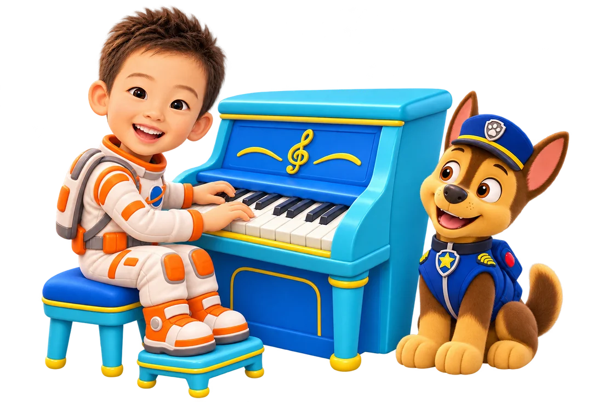

听见、唱出、弹出自己的音乐。

先摸琴键，再读谱
一次一个小发现
左手右手，各有旋律
听一句，弹一句
任意琴键，跟着节奏
看见音符，轻轻弹出
看音符，按下对应的琴键。弹错了可以再试。
玩完以后，这里会留下今天的记录。
屏幕上学一点，回到真正的琴键上弹一点。
由家长选择连接方式；声音仅在本机处理。
USB：用支持数据的线或转接头连接电钢琴，在支持 MIDI 的浏览器中授权。若此浏览器不支持，请选择麦克风。
麦克风：把设备放在电钢琴旁，打开琴的扬声器，松开延音踏板，一次弹一个音。建议先在琴键中间的 C3–C5 音区试一试。杂音或耳机模式可能影响识别；可以随时切回屏幕琴键。
五岁的练琴目标：今天还愿意坐下来，明天还想再弹一点。
先听再弹、先模仿再看谱。说“我听见你把这两颗音接起来了”，比只说“真聪明”更能让孩子知道自己做到了什么。弹错时停在原处再试，不扣星，不补打卡。
椅子和脚部有支撑，肩膀放松，手腕自然；这些需要家长和钢琴老师现场观察。练习结束，请孩子在电钢琴上选两三个音，给家人开一场小音乐会。累了就停。
新增“初遇钢琴”参考巴斯蒂安幼儿启蒙的顺序：黑键分组、声音高低、左右手、基本节奏，再到白键短句与五线谱。与乐理、技巧、听觉和表达交替学习。这里的小游戏和乐句均为原创练习，可配合家里的正版教材；不是巴斯蒂安官方课程。
“已探索”只表示完成了一次活动，不代表掌握或考级水平。学习发现只保存在当前设备。麦克风仅辅助单音和起音，不评价手型、力度或双手和弦。